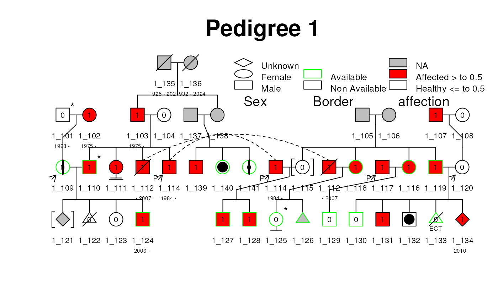
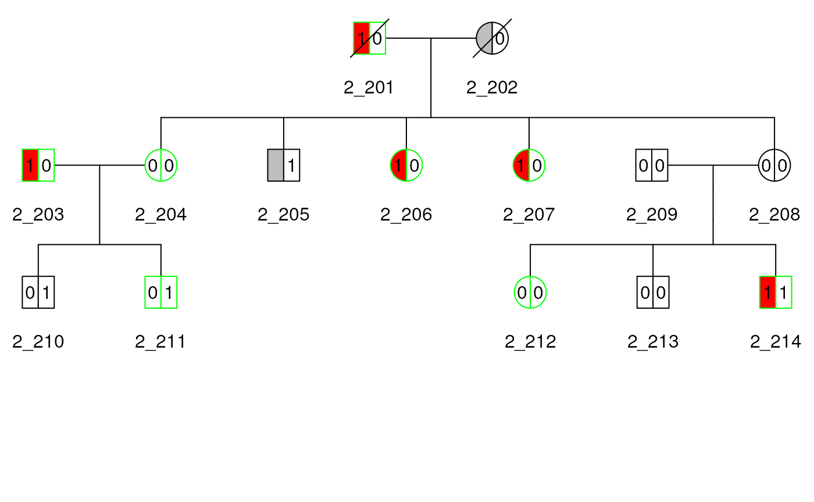
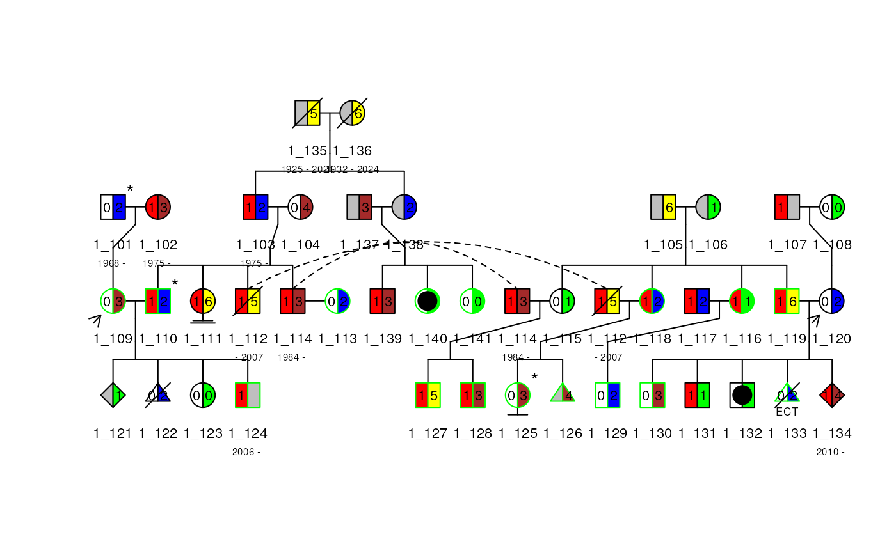

Introduction
This document is a tutorial for the Pedixplorer package,
with examples of creating Pedigree objects and kinship matrices and
other Pedigree utilities.
The Pedixplorer package is an updated version of the Kinship2
package, featuring a change in maintainer and repository from CRAN to
Bioconductor for continued development and support.
It contains the routines to handle family data with a Pedigree object. The initial purpose was to create correlation structures that describe family relationships such as kinship and identity-by-descent, which can be used to model family data in mixed effects models, such as in the coxme function. It also includes tools for Pedigree drawing and filtering which is focused on producing compact layouts without intervention. Recent additions include utilities to trim the Pedigree object with various criteria, and kinship for the X chromosome.
Supplementary vignettes are available to explain:
- The Pedigree
object
vignette("pedigree_object", package = "Pedixplorer") - The alignment algorithm used create the Pedigree
structure
vignette("pedigree_alignment", package = "Pedixplorer") - The kinship algorithm
vignette("pedigree_kinship", package = "Pedixplorer") - The plotting algorithm used to plot the Pedigree
vignette("pedigree_plot", package = "Pedixplorer")
Installation
The Pedixplorer package is available on Bioconductor and can be installed with the following command:
if (!requireNamespace("BiocManager", quietly = TRUE)) {
install.packages("BiocManager")
}
BiocManager::install("Pedixplorer")The package can then be loaded with the following command:
The Pedigree S4 object
The Pedigree object is a list of dataframes that describe the family structure. It contains the following components:
- ped: a Ped object with the Pedigree
information
help(Ped). - rel: a Rel object with the
relationship information
help(Rel). - scales: a Scales object of 2
dataframe with the filling and borders informations for the plot
help(Scales). - hints: a Hints objects with 2 slots
indicating the horder and the spouse to organise the Pedigree structure
help(Hints).
Basic Usage
Example Data
Two datasets are provided within the Pedixplorer package: + minnbreast: 17 families from a breast cancer study + sampleped: two sample pedigrees, with 41 and 14 subjects
This vignette uses the two pedigrees in sampleped. For more information on these
datasets, see help(minnbreast) and
help(sampleped).
Pedigree
First, we load sampleped and look at
some of the values in the dataset, and create a Pedigree object using the
Pedigree() function. This function automaticaly detect the
necessary columns in the dataframe. If necessary you can modify the
columns names with cols_ren. To create a Pedigree object, with multiple families, the
dataframe just need a family column in the ped_df dataframe.
When this is the case, the famid column will be pasted to the id of each
individuals separated by an underscore to create a unique id for each
individual in the Pedigree object.
## famid id dadid momid sex affection avail num
## 1 1 101 <NA> <NA> 1 0 0 2
## 2 1 102 <NA> <NA> 2 1 0 3
## 3 1 103 135 136 1 1 0 2
## 4 1 104 <NA> <NA> 2 0 0 4
## 5 1 105 <NA> <NA> 1 NA 0 6
## 6 1 106 <NA> <NA> 2 NA 0 1
## 7 1 107 <NA> <NA> 1 1 0 NA
## 8 1 108 <NA> <NA> 2 0 0 0
## 9 1 109 101 102 2 0 1 3
## 10 1 110 103 104 1 1 1 2## Pedigree object with:
## Ped object with 5 individuals and 13 metadata columns:
## id dadid momid sex famid steril status avail
## col_class <character> <character> <character> <ordered> <character> <logical> <logical> <logical>
## 1_103 1_103 1_135 1_136 male 1 <NA> <NA> FALSE
## 1_104 1_104 <NA> <NA> female 1 <NA> <NA> FALSE
## 1_110 1_110 1_103 1_104 male 1 <NA> <NA> TRUE
## 1_135 1_135 <NA> <NA> male 1 <NA> <NA> FALSE
## 1_136 1_136 <NA> <NA> female 1 <NA> <NA> FALSE
## affected useful kin isinf num_child_tot num_child_dir num_child_ind |
## col_class <logical> <logical> <numeric> <logical> <numeric> <numeric> <numeric>
## 1_103 TRUE <NA> <NA> <NA> 1 1 0
## 1_104 FALSE <NA> <NA> <NA> 1 1 0
## 1_110 TRUE <NA> <NA> <NA> 0 0 0
## 1_135 <NA> <NA> <NA> <NA> 1 1 0
## 1_136 <NA> <NA> <NA> <NA> 1 1 0
## family indId fatherId motherId gender affection available
## col_class <character> <character> <character> <character> <character> <character> <character>
## 1_103 1 103 135 136 1 1 0
## 1_104 1 104 <NA> <NA> 2 0 0
## 1_110 1 110 103 104 1 1 1
## 1_135 1 135 <NA> <NA> 1 <NA> 0
## 1_136 1 136 <NA> <NA> 2 <NA> 0
## num error sterilisation vitalStatus affection_mods avail_mods
## col_class <character> <character> <character> <character> <character> <character>
## 1_103 2 <NA> <NA> <NA> 1 0
## 1_104 4 <NA> <NA> <NA> 0 0
## 1_110 2 <NA> <NA> <NA> 1 1
## 1_135 5 <NA> <NA> <NA> NA 0
## 1_136 6 <NA> <NA> <NA> NA 0
## Rel object with 0 relationshipswith 0 MZ twin, 0 DZ twin, 0 UZ twin, 0 Spouse:
## id1 id2 code famid
## <character> <character> <c("ordered", "factor")> <character>For more information on the Pedigree() function, see
help(Pedigree).
The Pedigree object can be subset to individual pedigrees by their family id. The Pedigree object has a print, summary and plot method, which we show below. The print method prints the Ped and Rel object of the pedigree. The summary method prints a short summary of the pedigree. Finally the plot method displays the pedigree.
## [1] "1" "1" "1" "1" "1" "1" "1" "1" "1" "1" "1" "1" "1" "1" "1" "1" "1" "1" "1" "1" "1" "1" "1" "1"
## [25] "1" "1" "1" "1" "1" "1" "1" "1" "1" "1" "1" "1" "1" "1" "1" "1" "1" "2" "2" "2" "2" "2" "2" "2"
## [49] "2" "2" "2" "2" "2" "2" "2"## Pedigree object with
## [1] "Ped object with 41 individuals and 13 metadata columns"
## [1] "Rel object with 0 relationshipswith 0 MZ twin, 0 DZ twin, 0 UZ twin, 0 Spouse"
plot(ped1)
You can add a title and a legend to the plot with the following command:
 # Pedigree Shiny application
A shiny application is available to create, interact and plot pedigrees. To launch the application, use the following command:
if (interactive()) {
ped_shiny()
}The use is simple:
- You first need to import a dataset and select the columns to use.
- You can then select the affection informations and the colors associated to them.
- If different families are present in the dataset, you can select which one to plot.
- Before the plot is displayed, you can filter the pedigree by selecting the informatives subjects to keep and their relatives. If the pedigree is then splited in multiple families, you can select which to plot.
- Finally the plot is displayed and you can make it interactive and download the resulting image.
Fixing Pedigree Issues
To “break” the pedigree, we can manipulate the sex value to not match the parent value (in this example, we change 203 from a male to a female, even though 203 is a father). To do this, we first subset datped2, locate the id column, and match it to a specific id (in this case, 203). Within id 203, then locate in the sex column. Assign this subset to the incorrect value of 2 (female) to change the original/correct value of 1 (male).
To further break the pedigree, we can delete subjects who seem irrelevant to the pedigree (in this example, we delete 209 because he is a married-in father). To do this, we subset datped2 and use the -which() function to locate and delete the specified subject (in this case, 209). Reassign this code to datped22 to drop the specified subject entirely.
datped2 <- sampleped[sampleped$famid == 2, ]
datped2[datped2$id %in% 203, "sex"] <- 2
datped2 <- datped2[-which(datped2$id %in% 209), ]An error occurs when the Pedigree() function notices
that id 203 is not coded to be male
(1) but is a father. To correct this, we simply employ the
fix_parents() function to adjust the sex value to
match either momid or dadid.
fix_parents() will also add back in any deleted subjects,
further fixing the Pedigree.
## Error in validObject(.Object) :
## invalid class "Ped" object: dadid values '2_209' should be in '2_201', '2_202', '2_203', '2_204', '2_205'...
fixped2 <- with(datped2, fix_parents(id, dadid, momid, sex))
fixped2## id momid dadid sex famid
## 1 201 <NA> <NA> 1 1
## 2 202 <NA> <NA> 2 1
## 3 203 <NA> <NA> 1 1
## 4 204 202 201 2 1
## 5 205 202 201 1 1
## 6 206 202 201 2 1
## 7 207 202 201 2 1
## 8 208 202 201 2 1
## 9 210 204 203 1 1
## 10 211 204 203 1 1
## 11 212 208 209 2 1
## 12 213 208 209 1 1
## 13 214 208 209 1 1
## 14 209 <NA> <NA> 1 1
If the fix is straightforward (changing one sex value based on either
being a mother or father), fix_parents() will resolve the
issue. If the issue is more complicated, say if 203 is coded to be both a father and a
mother, fix_parents() will not know which one is correct
and therefore the issue will not be resolved.
Kinship
A common use for pedigrees is to make a matrix of kinship coefficients that can be used in mixed effect models. A kinship coefficient is the probability that a randomly selected allele from two people at a given locus will be identical by descent (IBD), assuming all founder alleles are independent. For example, we each have two alleles per autosomal marker, so sampling two alleles with replacement from our own DNA has only p=0.50 probability of getting the same allele twice.
Kinship for Pedigree object
We use kinship() to calculate the kinship matrix for
ped2. The result is a special symmetrix
matrix class from the Matrix R package,
which is stored efficiently to avoid repeating elements.
kin2 <- kinship(ped2)
kin2[1:9, 1:9]## 9 x 9 sparse Matrix of class "dsCMatrix"
## 1_201 1_202 1_203 1_204 1_205 1_206 1_207 1_208 1_209
## 1_201 0.50 . . 0.25 0.25 0.25 0.25 0.25 .
## 1_202 . 0.50 . 0.25 0.25 0.25 0.25 0.25 .
## 1_203 . . 0.5 . . . . . .
## 1_204 0.25 0.25 . 0.50 0.25 0.25 0.25 0.25 .
## 1_205 0.25 0.25 . 0.25 0.50 0.25 0.25 0.25 .
## 1_206 0.25 0.25 . 0.25 0.25 0.50 0.25 0.25 .
## 1_207 0.25 0.25 . 0.25 0.25 0.25 0.50 0.25 .
## 1_208 0.25 0.25 . 0.25 0.25 0.25 0.25 0.50 .
## 1_209 . . . . . . . . 0.5For family 2, see that the row and column names match the id in the figure below, and see that each kinship coefficient with themselves is 0.50, siblings are 0.25 (e.g. 204-205), and pedigree marry-ins only share alleles IBD with their children with coefficient 0.25 (e.g. 203-210). The plot can be used to verify other kinship coefficients.
Kinship for Pedigree with multiple families
The kinship() function also works on a Pedigree object with multiple families. We
show how to create the kinship matrix, then show a snapshot of them for
the two families, where the row and columns names are the ids of the
subject.
## 9 x 9 sparse Matrix of class "dsCMatrix"
## 1_101 1_102 1_103 1_104 1_105 1_106 1_107 1_108 1_109
## 1_101 0.50 . . . . . . . 0.25
## 1_102 . 0.50 . . . . . . 0.25
## 1_103 . . 0.5 . . . . . .
## 1_104 . . . 0.5 . . . . .
## 1_105 . . . . 0.5 . . . .
## 1_106 . . . . . 0.5 . . .
## 1_107 . . . . . . 0.5 . .
## 1_108 . . . . . . . 0.5 .
## 1_109 0.25 0.25 . . . . . . 0.50
kin_all[40:43, 40:43]## 4 x 4 sparse Matrix of class "dsCMatrix"
## 1_140 1_141 2_201 2_202
## 1_140 0.50 0.25 . .
## 1_141 0.25 0.50 . .
## 2_201 . . 0.5 .
## 2_202 . . . 0.5
kin_all[42:46, 42:46]## 5 x 5 sparse Matrix of class "dsCMatrix"
## 2_201 2_202 2_203 2_204 2_205
## 2_201 0.50 . . 0.25 0.25
## 2_202 . 0.50 . 0.25 0.25
## 2_203 . . 0.5 . .
## 2_204 0.25 0.25 . 0.50 0.25
## 2_205 0.25 0.25 . 0.25 0.50Kinship for twins in Pedigree with multiple families
Specifying twin relationships in a Pedigree with multiple families object is complicated by the fact that the user must specify the family id to which the id1 and id2 belong. We show below the relation matrix requires the family id to be in the last column, with the column names as done below, to make the plotting and kinship matrices to show up with the monozygotic twins correctly. We show how to specify monozygosity for subjects 206 and 207 in ped2, and subjects 125 and 126 in ped1. We check it by looking at the kinship matrix for these pairs, which are correctly at 0.5.
data("relped")
relped## famid id1 id2 code
## 1 1 140 141 1
## 2 1 139 140 2
## 3 1 121 123 2
## 4 1 129 126 4
## 5 1 130 133 3
## 6 2 210 211 1
## 7 2 208 204 2
## 8 2 212 213 3## 4 x 4 sparse Matrix of class "dsCMatrix"
## 1_124 1_125 1_126 1_127
## 1_124 0.5000 0.0625 0.0625 0.0625
## 1_125 0.0625 0.5000 0.2500 0.1250
## 1_126 0.0625 0.2500 0.5000 0.1250
## 1_127 0.0625 0.1250 0.1250 0.5000
kin_all[46:50, 46:50]## 5 x 5 sparse Matrix of class "dsCMatrix"
## 2_205 2_206 2_207 2_208 2_209
## 2_205 0.50 0.25 0.25 0.25 .
## 2_206 0.25 0.50 0.25 0.25 .
## 2_207 0.25 0.25 0.50 0.25 .
## 2_208 0.25 0.25 0.25 0.50 .
## 2_209 . . . . 0.5Note that subject 113 is not in ped1 because they are a marry-in without children in the Pedigree. Subject 113 is in their own Pedigree of size 1 in the kin_all matrix at index 41. We later show how to handle such marry-ins for plotting.
Optional Pedigree Informations
We use ped2 from sampleped to sequentially add optional information to the Pedigree object.
Status
The example below shows how to specify a status indicator, such as vital status. The
sampleped data does not include such
an
indicator, so we create one to indicate that the first generation of
ped2, subjects 1 and 2, are
deceased. The status indicator is used
to cross out the individuals in the Pedigree plot.
df2 <- sampleped[sampleped$famid == 2, ]
names(df2)## [1] "famid" "id" "dadid" "momid" "sex" "affection" "avail" "num"## Mode FALSE TRUE
## logical 12 2
plot(ped2)
Labels
Here we show how to use the label argument in the plot method to add additional information under each subject. In the example below, we add names to the existing plot by adding a new column to the elementMetadata of the Ped object of the Pedigree.
As space permits, more lines and characters per line can be made using the a {/em } character to indicate a new line.
mcols(ped2)$Names <- c(
"John\nDalton", "Linda", "Jack", "Rachel", "Joe", "Deb",
"Lucy", "Ken", "Barb", "Mike", "Matt",
"Mindy", "Mark", "Marie\nCurie"
)
plot(ped2, label = "Names")
Affected Indicators
We show how to specify affected status with a single indicator and
multiple indicators. First, we use the affected indicator from sampleped, which contains 0/1
indicators and NA as missing, and let
it it indicate blue eyes. Next, we create a vector as an indicator for
baldness. And add it as a second filling scale for the plot with
generate_colors(add_to_scale = TRUE). The plot shapes for
each subject is therefore divided into two equal parts and shaded
differently to indicate the two affected indicators.
mcols(ped2)$bald <- as.factor(c(0, 0, 0, 0, 1, 0, 0, 0, 0, 1, 1, 0, 0, 1))
ped2 <- generate_colors(ped2, col_aff = "bald", add_to_scale = TRUE)
plot(ped2, legend = TRUE)
Special Relationships
Special pedigree relationships can be specified in a matrix as the relation argument. There are 4 relationships that can be specified by numeric codes:
- 1 = Monozygotic twins
- 2 = Dizygotic twins
- 3 = twins of unknown zygosity
- 4 = Spouse
The spouse relationship can indicate a marry-in when a couple does not have children together.
Twins
Below, we use the relationship dataset. We can specify in the code column if the individuals are monozygotic ‘1’, dizygotic ‘2’ or of unknown-zygosity ‘3’ twins. The twin relationships are both represented with diverging lines from a single point. The monozygotic twins have an additional line connecting the diverging lines, while twins of unknown zygosity have a question mark.
## create twin relationships
data("relped")
rel(ped2) <- Rel(relped[relped$famid == 2, ])
plot(ped2)
Inbreeding
Another special relationship is inbreeding. Inbreeding of founders implies the founders’ parents are related (the maternal and paternal genes descended from a single ancestral gene). One thing we can do is add more people to the pedigree to show this inbreeding.
To show that a pair of founders (subjects 201 and 202) are inbred, we must show that their parents are siblings. To do this, we create subjects 197 and 198 to be the parents of 201 and also create subjects 199 and 200 to be the parents of 202. To make subjects 198 and 199 siblings, we give them the same parents, creating subjects 195 and 196. This results in subjects 201 and 202 being first cousins, and therefore inbred.
indid <- 195:202
dadid <- c(NA, NA, NA, 196, 196, NA, 197, 199)
momid <- c(NA, NA, NA, 195, 195, NA, 198, 200)
sex <- c(2, 1, 1, 2, 1, 2, 1, 2)
ped3 <- data.frame(
id = indid, dadid = dadid,
momid = momid, sex = sex
)
ped4df <- rbind.data.frame(df2[-c(1, 2), 2:5], ped3)
ped4 <- Pedigree(ped4df)
plot(ped4)
Pedigree Plot Details
The plot method attempts to adhere to many standards in pedigree plotting, as presented by Bennet et al. 2008.
To show some other tricks with pedigree plotting, we use ped1 from sampleped, which has 41 subjects in 4 generations, including a generation with double first cousins. After the first marriage of 114, they remarried subject 113 without children between them. If we do not specify the marriage with the relation argument, the plot method excludes subject 113 from the plot. The basic plot of ped1 is shown in the figure below.
df1 <- sampleped[sampleped$famid == 1, ]
relate1 <- data.frame(
id1 = 113,
id2 = 114,
code = 4,
famid = 1
)
ped1 <- Pedigree(df1, relate1)
plot(ped1)
Align by Input Order
The plot method does a decent job aligning subjects given the order of the subjects when the Pedigree object is made, and sometimes has to make two copies of a subject. If we change the order of the subjects when creating the Pedigree, we can help the plot method reduce the need to duplicate subjects, as Figure~ no longer has subject 110 duplicated.

Plot colors and scales
The Pedigree object contains a Scales object that can be modified to change
the colors and patterns used in the plot. To make it easy for the user
to modify it a function generate_colors() is available.
This function will generate a color palette for the filling and the
bordering of the plot. This function transform a given column of the
dataframe into a factor and generate a color palette for each level of
the factor. The user can then modify the colors and the patterns used
for the filling and the bordering of the plot.
To do so you can do as follow:
scales(ped1)## An object of class "Scales"
## Slot "fill":
## order column_values column_mods mods labels affected fill density angle
## 1 1 affection affection_mods 0 Healthy <= to 0.5 FALSE white NA NA
## 2 1 affection affection_mods 1 Affected > to 0.5 TRUE red NA NA
## 3 1 affection affection_mods NA <NA> NA grey NA NA
##
## Slot "border":
## column_values column_mods mods labels border
## 1 avail avail_mods NA NA grey
## 2 avail avail_mods 1 Available green
## 3 avail avail_mods 0 Non Available black
ped1 <- generate_colors(
ped1, col_aff = "num",
add_to_scale = TRUE, is_num = TRUE,
keep_full_scale = TRUE, breaks = 2,
colors_aff = c("blue", "green"),
colors_unaff = c("yellow", "brown"),
threshold = 3, sup_thres_aff = FALSE
)
plot(ped1)
# To modify a given scale you can do as follow
fill(ped1)## order column_values column_mods mods labels affected fill density
## 1 1 affection affection_mods 0 Healthy <= to 0.5 FALSE white NA
## 2 1 affection affection_mods 1 Affected > to 0.5 TRUE red NA
## 3 1 affection affection_mods NA <NA> NA grey NA
## 4 2 num num_mods 1 Affected < to 3 : (1,2] TRUE #0000FF NA
## 5 2 num num_mods 2 Affected < to 3 : [-0.002,1] TRUE #00FF00 NA
## 6 2 num num_mods 3 Healthy >= to 3 : (4.5,6] FALSE #FFFF00 NA
## 7 2 num num_mods 4 Healthy >= to 3 : [3,4.5] FALSE #A52A2A NA
## 8 2 num num_mods NA NA : NA NA grey NA
## angle
## 1 NA
## 2 NA
## 3 NA
## 4 NA
## 5 NA
## 6 NA
## 7 NA
## 8 NAPedigree Utility Functions
Ped as a data.frame
A main features of a Pedigree object are vectors with an element for
each subject. It is sometimes useful to extract these vectors from the
Pedigree object into a data.frame with
basic information that can be used to construct a new Pedigree object. This is possible with the
as.data.frame() method, as shown below.
dfped2 <- as.data.frame(ped(ped2))
dfped2Subsetting and Trimming
Pedigrees with large size can be a bottleneck for programs that run calculations on them. The Pedixplorer package contains some routines to identify which subjects to remove. We show how a subject (e.g. subject 210) can be removed from ped2, and how the Pedigree object is changed by verifying that the relation dataframe no longer has the twin relationship between subjects 210 and 211, as indicated by id1 and id2.
ped2_rm210 <- ped2[-10]
rel(ped2_rm210)## Rel object with 0 relationshipswith 0 MZ twin, 0 DZ twin, 0 UZ twin, 0 Spouse:
## id1 id2 code famid
## <character> <character> <c("ordered", "factor")> <character>
rel(ped2)## Rel object with 4 relationshipswith 1 MZ twin, 1 DZ twin, 1 UZ twin, 1 Spouse:
## id1 id2 code famid
## <character> <character> <factor> <character>
## 1 2_210 2_211 MZ twin 2
## 2 2_204 2_208 DZ twin 2
## 3 2_212 2_213 UZ twin 2
## 4 2_211 2_212 Spouse 2The steps above also works by the id of the subjects
themselves.
We provide subset(), which trims subjects from a Pedigree by
their id or other argument. Below is an
example of removing subject 110, as done above, then we further trim the
Pedigree by a vector of subject ids. We check the trimming by looking at
the id vector and the relation matrix.
## [1] "2_201" "2_202" "2_203" "2_204" "2_205" "2_206" "2_207" "2_208" "2_209" "2_211" "2_212" "2_213"
## [13] "2_214"
rel(ped2_trim210)## Rel object with 3 relationshipswith 0 MZ twin, 1 DZ twin, 1 UZ twin, 1 Spouse:
## id1 id2 code famid
## <character> <character> <c("ordered", "factor")> <character>
## 1 2_204 2_208 DZ twin 2
## 2 2_212 2_213 UZ twin 2
## 3 2_211 2_212 Spouse 2## [1] "2_201" "2_202" "2_203" "2_204" "2_205" "2_206" "2_207" "2_208" "2_209" "2_211" "2_213"
rel(ped2_trim_more)## Rel object with 1 relationshipwith 0 MZ twin, 1 DZ twin, 0 UZ twin, 0 Spouse:
## id1 id2 code famid
## <character> <character> <c("ordered", "factor")> <character>
## 1 2_204 2_208 DZ twin 2Shrinking
An additional function in Pedixplorer is shrink(), which shrinks a Pedigree to a specified bit size while maintaining the maximal amount of information for genetic linkage and association studies. Using an indicator for availability and affected status, it removes subjects in this order: + unavailable with no available descendants + available and are not parents + available who have missing affected status + available who are unaffected + available who are affected
We show how to shrink Pedigree 1 to bit size 30, which happens to be the bit size after removing only the unavailable subjects. We show how to extract the shrunken Pedigree object from the shrink result, and plot it.
## $id_trim
## [1] "1_101" "1_102" "1_107" "1_108" "1_111" "1_113" "1_121" "1_122" "1_123" "1_131" "1_132" "1_134"
## [13] "1_139"
##
## $id_lst
## $id_lst$unavail
## [1] "1_101" "1_102" "1_107" "1_108" "1_111" "1_113" "1_121" "1_122" "1_123" "1_131" "1_132" "1_134"
## [13] "1_139"
##
##
## $bit_size
## [1] 46 29
##
## $avail
## [1] FALSE FALSE FALSE FALSE TRUE TRUE FALSE FALSE FALSE TRUE FALSE TRUE TRUE FALSE TRUE TRUE
## [17] TRUE TRUE TRUE TRUE TRUE TRUE FALSE FALSE FALSE FALSE TRUE TRUE
##
## $pedSizeOriginal
## [1] 41
##
## $pedSizeIntermed
## [1] 28
##
## $pedSizeFinal
## [1] 28
plot(shrink1_b30$pedObj)Now shrink Pedigree 1 to bit size 25, which requires removing subjects who are informative. If there is a tie between multiple subjects about who to remove, the method randomly chooses one of them. With this seed setting, the method removes subjects 140 then 141.
## $id_trim
##
## "1_101" "1_102" "1_107" "1_108" "1_111" "1_113" "1_121" "1_122" "1_123" "1_131" "1_132" "1_134"
## id
## "1_139" "1_124" "1_130" "1_125"
##
## $id_lst
## $id_lst$unavail
## [1] "1_101" "1_102" "1_107" "1_108" "1_111" "1_113" "1_121" "1_122" "1_123" "1_131" "1_132" "1_134"
## [13] "1_139"
##
## $id_lst$affect
## id
## "1_124" "1_130" "1_125"
##
##
## $bit_size
## [1] 46 29 28 26 24
##
## $avail
## [1] FALSE FALSE FALSE FALSE TRUE FALSE FALSE FALSE TRUE FALSE TRUE TRUE FALSE TRUE TRUE TRUE
## [17] TRUE TRUE FALSE FALSE FALSE FALSE TRUE TRUE
##
## $pedSizeOriginal
## [1] 41
##
## $pedSizeIntermed
## [1] 28
##
## $pedSizeFinal
## [1] 24
plot(shrink1_b25$pedObj)
Select Unrelateds
In this section we briefly show how to use unrelated to find a set of the maximum number of unrelated available subjects from a Pedigree. The input required is a Pedigree object and a vector indicating availability. In some Pedigrees there are numerous sets of subjects that satisfy the maximum number of unrelateds, so the method randomly chooses from the set. We show two sets of subject ids that are selected by the routine and discuss below.
## [1] "2_203" "2_206"
set2 <- unrelated(ped2)
set2## [1] "2_203" "2_214"We can easily verify the sets selected by unrelated by referring to Figure~ and see that subjects 203 and 206 are unrelated to everyone else in the Pedigree except their children. Furthermore, we see in df2 that of these two, only subject 203 is available. Therefore, any set of unrelateds who are available must include subject 203 and one of the these subjects: 201, 204, 206, 207, 212, and 214, as indicated by the kinship matrix for Pedigree 2 subset to those with availability status of 1.
## 14 x 14 sparse Matrix of class "dsCMatrix"## [[ suppressing 14 column names '2_201', '2_202', '2_203' ... ]]##
## 2_201 0.500 . . 0.250 0.250 0.250 0.250 0.250 . 0.1250 0.1250 0.1250 0.1250 0.1250
## 2_202 . 0.500 . 0.250 0.250 0.250 0.250 0.250 . 0.1250 0.1250 0.1250 0.1250 0.1250
## 2_203 . . 0.50 . . . . . . 0.2500 0.2500 . . .
## 2_204 0.250 0.250 . 0.500 0.250 0.250 0.250 0.250 . 0.2500 0.2500 0.1250 0.1250 0.1250
## 2_205 0.250 0.250 . 0.250 0.500 0.250 0.250 0.250 . 0.1250 0.1250 0.1250 0.1250 0.1250
## 2_206 0.250 0.250 . 0.250 0.250 0.500 0.250 0.250 . 0.1250 0.1250 0.1250 0.1250 0.1250
## 2_207 0.250 0.250 . 0.250 0.250 0.250 0.500 0.250 . 0.1250 0.1250 0.1250 0.1250 0.1250
## 2_208 0.250 0.250 . 0.250 0.250 0.250 0.250 0.500 . 0.1250 0.1250 0.2500 0.2500 0.2500
## 2_209 . . . . . . . . 0.50 . . 0.2500 0.2500 0.2500
## 2_210 0.125 0.125 0.25 0.250 0.125 0.125 0.125 0.125 . 0.5000 0.2500 0.0625 0.0625 0.0625
## 2_211 0.125 0.125 0.25 0.250 0.125 0.125 0.125 0.125 . 0.2500 0.5000 0.0625 0.0625 0.0625
## 2_212 0.125 0.125 . 0.125 0.125 0.125 0.125 0.250 0.25 0.0625 0.0625 0.5000 0.2500 0.2500
## 2_213 0.125 0.125 . 0.125 0.125 0.125 0.125 0.250 0.25 0.0625 0.0625 0.2500 0.5000 0.2500
## 2_214 0.125 0.125 . 0.125 0.125 0.125 0.125 0.250 0.25 0.0625 0.0625 0.2500 0.2500 0.5000
kin2[is_avail, is_avail]## 8 x 8 sparse Matrix of class "dsCMatrix"
## 2_201 2_203 2_204 2_206 2_207 2_211 2_212 2_214
## 2_201 0.500 . 0.250 0.250 0.250 0.1250 0.1250 0.1250
## 2_203 . 0.50 . . . 0.2500 . .
## 2_204 0.250 . 0.500 0.250 0.250 0.2500 0.1250 0.1250
## 2_206 0.250 . 0.250 0.500 0.250 0.1250 0.1250 0.1250
## 2_207 0.250 . 0.250 0.250 0.500 0.1250 0.1250 0.1250
## 2_211 0.125 0.25 0.250 0.125 0.125 0.5000 0.0625 0.0625
## 2_212 0.125 . 0.125 0.125 0.125 0.0625 0.5000 0.2500
## 2_214 0.125 . 0.125 0.125 0.125 0.0625 0.2500 0.5000Session information
## R version 4.4.1 (2024-06-14)
## Platform: x86_64-pc-linux-gnu
## Running under: Ubuntu 22.04.4 LTS
##
## Matrix products: default
## BLAS: /usr/lib/x86_64-linux-gnu/openblas-pthread/libblas.so.3
## LAPACK: /usr/lib/x86_64-linux-gnu/openblas-pthread/libopenblasp-r0.3.20.so; LAPACK version 3.10.0
##
## locale:
## [1] LC_CTYPE=en_US.UTF-8 LC_NUMERIC=C LC_TIME=en_US.UTF-8
## [4] LC_COLLATE=en_US.UTF-8 LC_MONETARY=en_US.UTF-8 LC_MESSAGES=en_US.UTF-8
## [7] LC_PAPER=en_US.UTF-8 LC_NAME=C LC_ADDRESS=C
## [10] LC_TELEPHONE=C LC_MEASUREMENT=en_US.UTF-8 LC_IDENTIFICATION=C
##
## time zone: UTC
## tzcode source: system (glibc)
##
## attached base packages:
## [1] stats graphics grDevices utils datasets methods base
##
## other attached packages:
## [1] Pedixplorer_1.1.3 BiocStyle_2.32.1
##
## loaded via a namespace (and not attached):
## [1] gtable_0.3.5 xfun_0.48 bslib_0.8.0 ggplot2_3.5.1
## [5] htmlwidgets_1.6.4 lattice_0.22-6 quadprog_1.5-8 vctrs_0.6.5
## [9] tools_4.4.1 generics_0.1.3 stats4_4.4.1 tibble_3.2.1
## [13] fansi_1.0.6 highr_0.11 pkgconfig_2.0.3 Matrix_1.7-0
## [17] data.table_1.16.0 desc_1.4.3 S4Vectors_0.42.1 readxl_1.4.3
## [21] lifecycle_1.0.4 stringr_1.5.1 compiler_4.4.1 shinytoastr_2.2.0
## [25] textshaping_0.4.0 munsell_0.5.1 httpuv_1.6.15 shinyWidgets_0.8.7
## [29] htmltools_0.5.8.1 sass_0.4.9 yaml_2.3.10 lazyeval_0.2.2
## [33] plotly_4.10.4 later_1.3.2 pillar_1.9.0 pkgdown_2.1.1
## [37] jquerylib_0.1.4 tidyr_1.3.1 DT_0.33 cachem_1.1.0
## [41] mime_0.12 tidyselect_1.2.1 digest_0.6.37 stringi_1.8.4
## [45] colourpicker_1.3.0 dplyr_1.1.4 purrr_1.0.2 bookdown_0.40
## [49] fastmap_1.2.0 grid_4.4.1 colorspace_2.1-1 cli_3.6.3
## [53] magrittr_2.0.3 utf8_1.2.4 withr_3.0.1 scales_1.3.0
## [57] promises_1.3.0 rmarkdown_2.28 httr_1.4.7 gridExtra_2.3
## [61] cellranger_1.1.0 ragg_1.3.3 shiny_1.9.1 evaluate_1.0.0
## [65] knitr_1.48 miniUI_0.1.1.1 viridisLite_0.4.2 rlang_1.1.4
## [69] Rcpp_1.0.13 xtable_1.8-4 glue_1.8.0 BiocManager_1.30.25
## [73] BiocGenerics_0.50.0 jsonlite_1.8.9 R6_2.5.1 plyr_1.8.9
## [77] systemfonts_1.1.0 fs_1.6.4